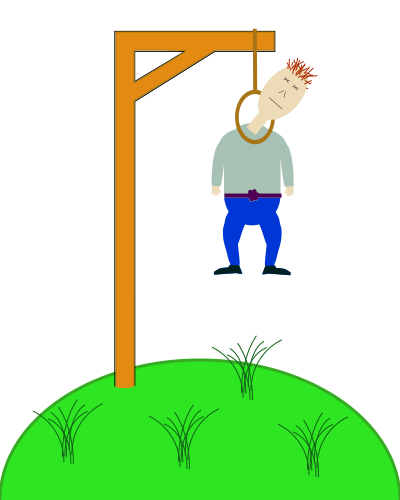

Review the sourcecode of the JavaScript-file, then open up the console in the developer tool to do the magic to hide/show individual parts of the SVG-image.
This example does not work since the resource is loaded later. The JavaScript needs to execute om document ready to make this example with external resource work.
